About Me
I’m currently pursuing a career in actuarial science, combining my interests in mathematics, statistics, and business strategy. I’m building a portfolio of projects that showcase my skills in insurance modeling, Excel, Python, and data analysis.
Projects
NBA Salary Insurance Model
An Excel-based actuarial model estimating insurance premiums for NBA players based on contract terms, injuries, and expected missed games.
View Full Project on GitHubGSW Estimated Annual Premiums
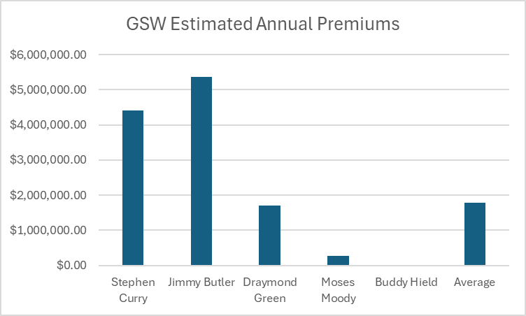Click the chart to view the full project on GitHub.
UCLA 2022 Bruin Actuarial Society Case Competition – Bruin Mutual
In the UCLA 2022 Actuarial Case Competition, our team was tasked with performing a reserving analysis for Bruin Mutual across three lines of business: personal auto physical damage, personal auto liability, and homeowners property. We built a comprehensive Excel workbook that processed raw claims data and generated diagnostic triangles for various metrics. Using five actuarial reserving methods—Paid Chain Ladder, Reported Chain Ladder, Expected Loss, Bornhuetter-Ferguson, and Case Outstanding—we evaluated each line of business and selected the most appropriate methods based on data patterns and reliability. We accounted for anomalies such as COVID-19-related distortions and developed recommendations for standardized reserving approaches to improve future efficiency.
Estimated Ultimate Losses by Method
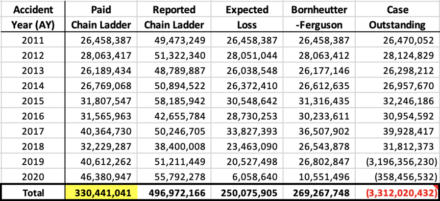Cumulative Paid Losses by Development Year
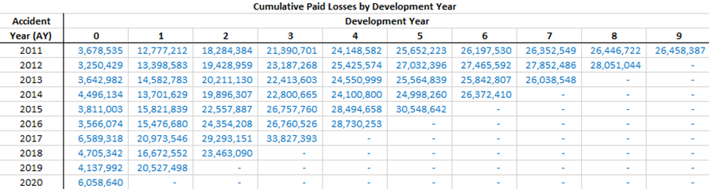Cumulative Reported Losses by Development Year
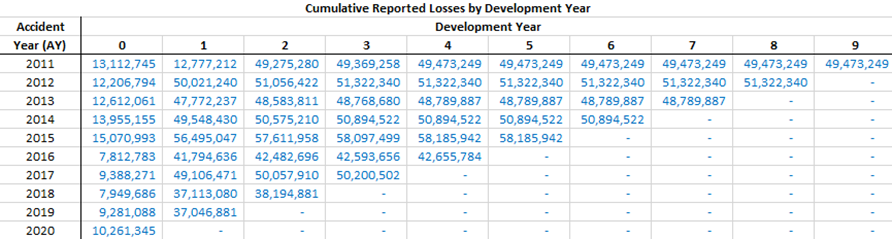📄 Project Report: Download PDF
🔗 GitHub Repository: View the Full Case Competition on GitHub
2024 UCLA Bruin Actuarial Society Case Competition – Sgt. Pepper Financial Group
In the 2024 UCLA Actuarial Case Competition, my team developed a predictive model to estimate lapse rates for a new Fixed Annuity product under consideration by Sgt. Pepper Financial Group. Using Python, we cleaned 30 years of historical data, applied backward elimination to identify key factors, and constructed a linear regression formula. Our model incorporated variables like crediting rate, treasury yields, and surrender charges—achieving only 4.7% RMSE. We visualized correlations and compared our predictions to actual lapse behavior, and proposed improvements for handling outliers and exploring nonlinear models.
Correlation Matrix of Variables
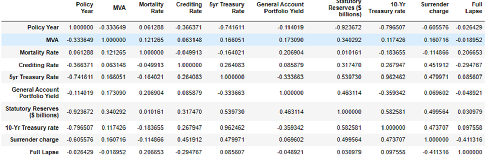Model vs. Actual Full Lapse Rates
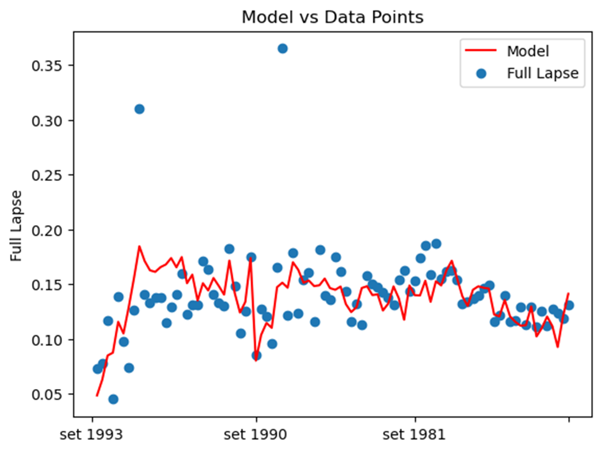📄 Project Report: Download PDF
🔗 GitHub Repository: View the Full Case Competition on GitHub
2025 UCLA Bruin Actuarial Society Case Competition – Axis Brokerage LLC
In the 2025 UCLA BAS Case Competition, my team partnered with Axis Brokerage LLC to evaluate fire loss modeling for a potential client, Montgomery. We tested three common severity distributions—Lognormal, Weibull, and Pareto—using statistical fitting techniques to determine the best representation of historical loss data. We created multiple model scenarios, including and excluding a $150M outlier fire loss, and compared their statistical performance using K-S, AIC, and BIC criteria. Our findings favored Lognormal and Pareto due to their strong fit for heavy-tailed fire loss data.
We also highlighted the importance of integrating catastrophe (CAT) models, which project significantly higher losses than historical trends. This supports the inclusion of modeled losses in actuarial pricing. Finally, we recommended strategies for outlier handling and practical use of distributions in Monte Carlo simulations.
Comparison of AIC and BIC Across Distributions
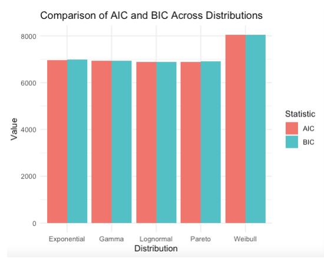Kolmogorov-Smirnov Statistic Across Distributions
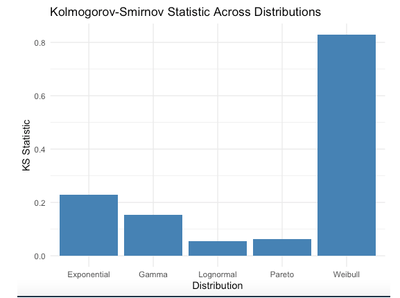📄 Project Report: Download PDF
🔗 GitHub Repository: View the Full Case Competition on GitHub
Home Insurance SQL Project
In this project, I analyzed a simulated home insurance dataset using SQL and Python. I used SQL to aggregate and join data from policyholders, policies, and claims tables, then visualized the results with Python. This project showcases my ability to analyze and communicate trends from insurance data.
Visualizations
- Number of Claims by Cause 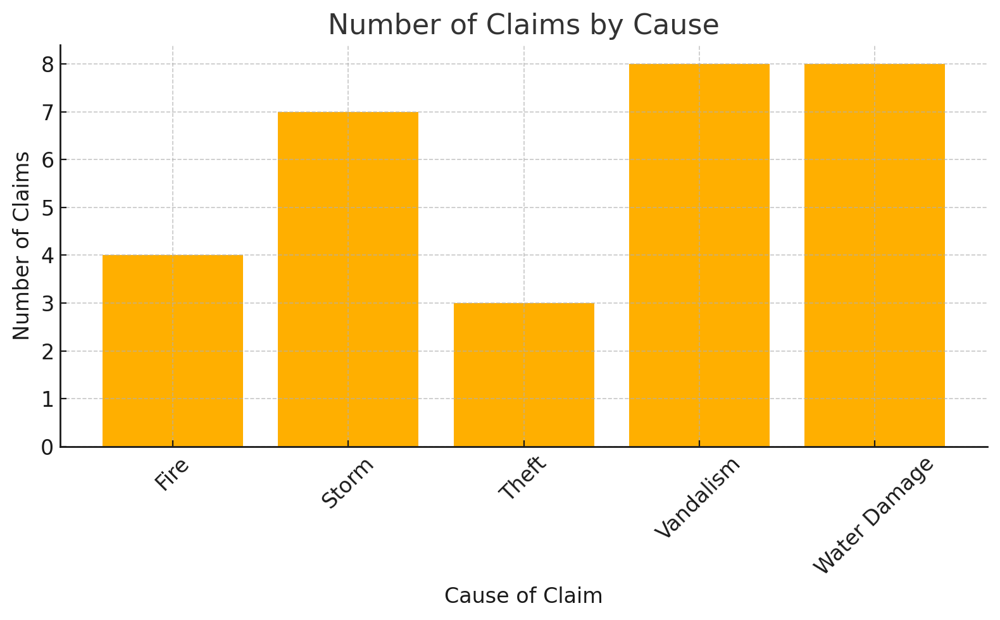
- Average Premium by Zip Code 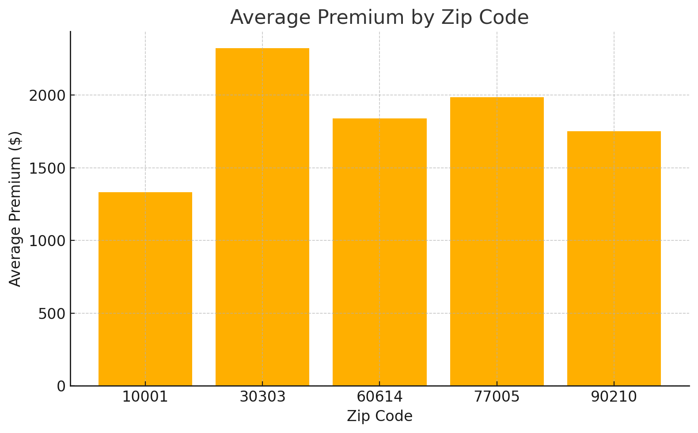
- Claims by Status (Pie Chart) 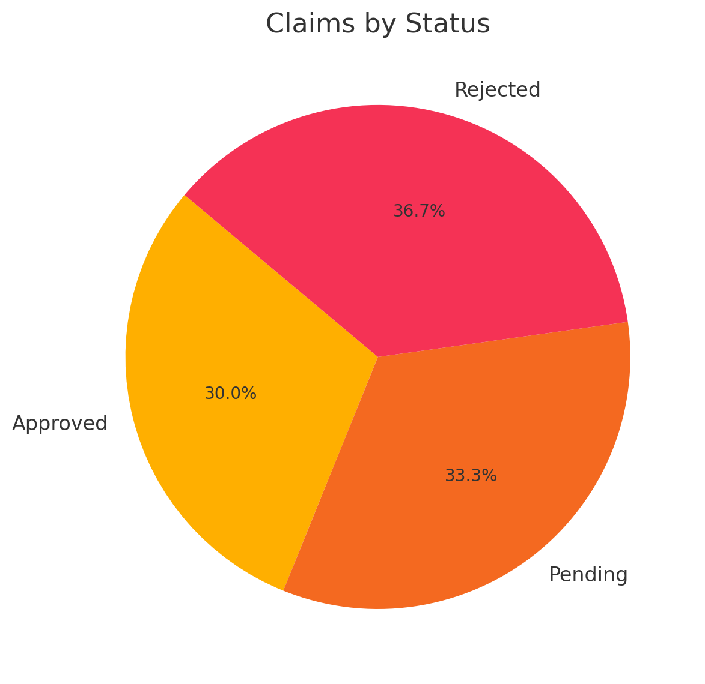
What I Learned
- Used SQL to group, filter, and join insurance datasets effectively.
- Built visualizations to explore geographical and categorical insurance trends.
- Applied basic actuarial thinking to identify claim patterns and risks.
Real-World Actuarial Applications
- Evaluating geographic or behavioral patterns in claim frequency and severity.
- Supporting underwriting and pricing decisions through data-driven insights.
- Using SQL and Python to automate reserving dashboards or risk assessments.
🔗 Code and Report: View Full Code and Report
Claims Triangle Analysis SQL Project
In this project, I analyzed insurance claims data using a claims development triangle to estimate future liabilities. I extracted raw claims data from a SQLite database, reshaped it into a triangle format showing cumulative reported amounts by accident and development year, and calculated link ratios to observe how claims typically develop over time. Using these ratios, I projected missing values in the triangle to estimate ultimate claims and calculate incurred but not reported (IBNR) reserves. Finally, I visualized the completed triangle using a heatmap to clearly communicate development patterns and reserve estimates.
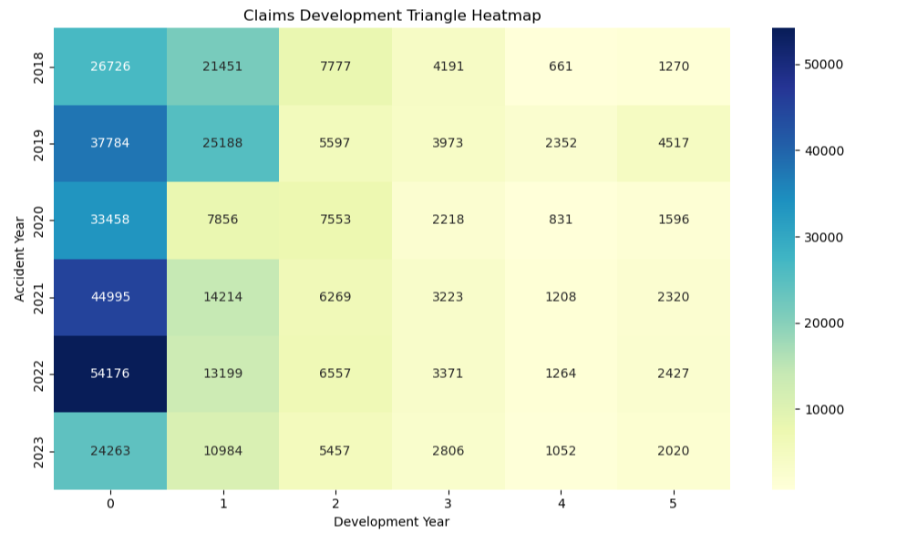What I Learned
- How to manipulate and analyze claims data using SQL and Python
- How to construct and interpret a cumulative claims development triangle
- How to calculate and apply link ratios to estimate future claims
- How to estimate ultimate losses and IBNR reserves
- How to visualize claims development using heatmaps in Python
Real-World Actuarial Applications
- Estimating loss reserves for insurance financial reporting
- Supporting pricing decisions and reserve adequacy reviews
- Complying with regulatory requirements for claim liabilities
- Evaluating historical claim development patterns for trend analysis
- Communicating reserve estimates to stakeholders through visual reporting
Resume
Contact
Email: connorachia7@gmail.com
LinkedIn: linkedin.com/in/connor-chia-927001209
GitHub: github.com/connorachia